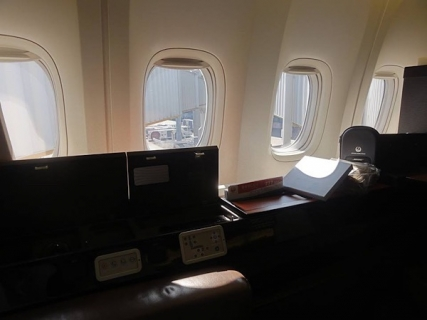
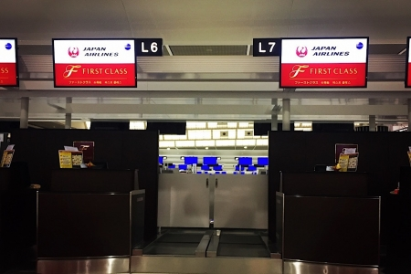
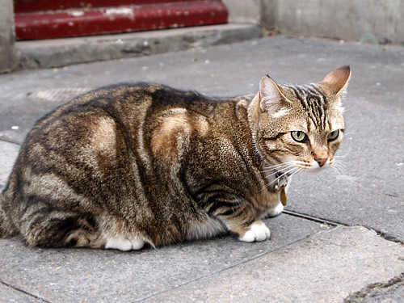
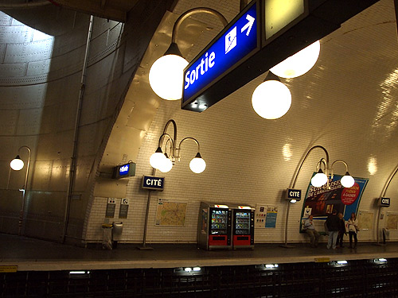
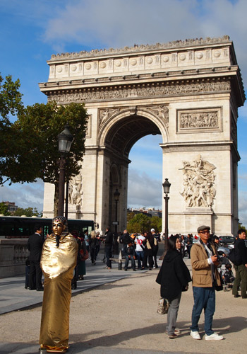
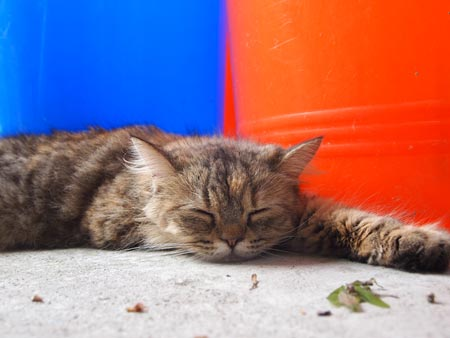
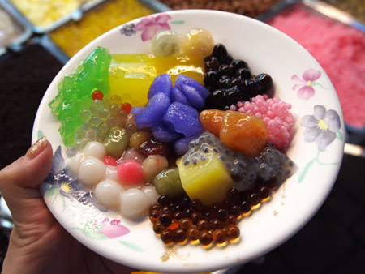
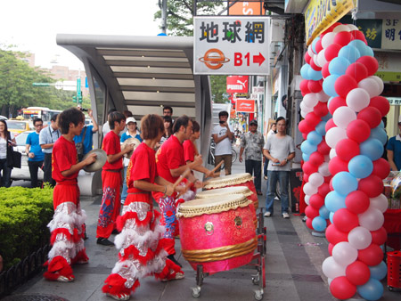
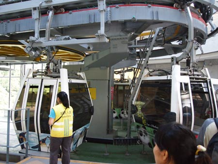
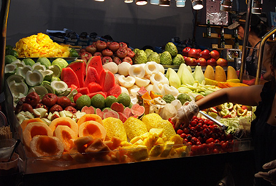

かに風味ブログ
-
ファーストクラスとゾンビタクシー③
私は王様にはなった事が無い。女性なので女王さまになるのかもしれないけれども、女王さまにも王女様にもなった事はない。けれども…ここはなんだ！城か！私の城か！ 一人暮らしを始めたときに感じた高揚感！…

-
ファーストクラスとバリのゾンビタクシー②
我々は浮かれていた。 いや、マイルでファーストクラスに乗るひとは必ず浮かれるだろうけど。 バリ行きは午前便。 カウンターが開く前から空港に到着し、ファーストクラスカウンター前のソファーでそわそわしてい…

-
ファーストクラスとバリのソンビタクシー①
8年間…色々あったなー！と、ひとつひとつ思い出しては頭の中のノートに草稿を書き出してみるものの、年月によって記憶の色彩は色あせて、劣化していくのはまだしも、テレビやインターネット上の溢れんばかりの情報…
-
山のてっぺん
春間近。 まずはこのはなし。 東京生まれの東京育ち。三代続く江戸っ子のわたし。 田舎というものを知らないから、夏休みに親の実家に帰省するというイベントもなく、育ったのだけれども、山野の自然に憧れてい…

-
ブログを休止していた8年間
ブログが休止して。。。あれよと8年も経っておりました。 びっくりですね！ 当時はたしか、DELLのノートパソコンでブログの更新をしていたのだけれども、すっかりスマホ、タブレット時代となり、この更新もi…

-
ちょびっと試運転
2011年11月から休止中！ ちょいと動かして確認中( ・∇・)

-
おすすめのタレ
こないだテレビを見ていたら、大盛りタレントホンジャマカの石ちゃんが「あちこち食べ歩いてきた中のベスト3！」としてあげたものの一つが宮崎、おぐらのチキン南蛮だった。 スタジオで実食して出演者全員「おいし…

-
>まっちゃんさま
パリの猫はでっかい。 ------------------…

-
パリの街歩きヨコ
メトロの駅。シテ駅。 パリのメトロはとにかく歩く歩く上る上る下がる下がる！ 階段だらけのぐねぐねの乗り継ぎ。 RPGのダンジョンみたい。 たまにエレベーターがあるとほっとするけど、違うホームに着い…

-
パリのアパルトマン
今回はパリ4区。マレ地区のアパルトマンを借りました。 11㎡の狭小アパルトマン！ 狭い螺旋階段をのぼって2階の小さな部屋！ -------&#…

-
パリと言えば…
パリといえば。。。 凱旋門とエッフェル塔。誰もが知ってるけど旅の記録としてすこし。 -----------&#…

-
シャルトル
パリ郊外のシャルトルに行ってみた。 モンサンミッシェルがいまいち物足りなかったのと、やっぱりSNCFに乗りたい！っていうのが理由。 モンパルナス駅でチケット買って出発。 --…

-
パリの自炊
少し長い滞在はキッチン付きがなにかと便利だということで、 小さなアパルトマンを借りることに。円高がすばらしいと感じた11泊。 -------&…

-
>yama
朋友告诉我台湾有很多猫住在的地方了。 听说以后上网找一找这儿。 ！我上网看到这儿！ 很多猫住在的地方是[侯硐] [侯ఈ…

-
台湾なぞもの
你看！你看！ 这个你知道吗？？ 不对！不对！这碟子不是调色…

-
台湾新規開店
那一天，我想去了SOGO。 我走路到MRT站去，这个的时候我听到音乐！ あの日はそごうに行こうと思って、とことこMRT(駅)まで歩いていくとこだった。 と、ど…

-
台湾＠猫空
台北有一个有名的地方是[猫空]，我喜欢这个名字。 [猫][空]我都喜欢。 我想一想！ 很多猫躺在苍天！很有意识！ …

-
台湾茶芸館めぐり
もう日本に帰国しちゃってるんですが、在台湾時の功夫茶、茶芸館めぐりについて。 我已经回日本，可是我要写在台湾的日常（喝泡茶，去茶馆） ----…

-
金曜のわたし
我最喜欢星期五的下课的时候。 因为以后的两天没上课！所以这个时候我跳出去学校。 我昨天下…

-
あいかわらず食い倒れ
そんなこんなで日本食が恋しくなったりもするけど、 基本的にまいにち地元ごはんです。 肉がおいしいー。 市場に行くと「これからぼくたちお肉になります」っていうニワトリたちが私をじーっと見るもんだから…